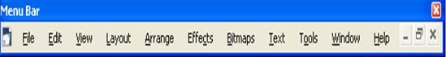
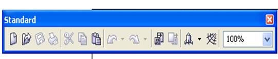
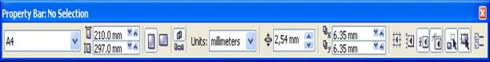
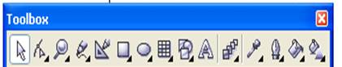
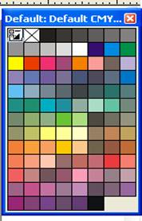

1. Экран элементтері.
2. Түстік модель.
CorelDRAW арқылы қисықты, геометриялық фигураны немесе мәтін әрпін оңай құруға, және өте жоғарғы дәлдікпен олардың формасын өзгертуге, мәтінді берілген қисық сызық бойымен орналастырылуға болады. Әртүрлі құралдарды бірге қолдану арқылы CorelDRAW-да өте көп графикалық эффектер: мәтін қатарын немесе графикалық объектіні изометриялық бейнеге түрлендіруге, иілдіруге, сызықпен қоршауға, 68айналдыруға, айнадағы бейнесін алуға, үшөлшемді эффектер алуға т.с.с. көптеген жұмыстарды жасауға болады. Corel Corporation графикалық редакторы CorelDRAW атаулы Канада фирмасының ӛте үлкен мүмкіндіктеріне, дайын бейнелер кітапханасының үлкендігіне байланысты ең белгілі, кӛп тараған бағдарламалардың бірі болып отыр. Кейбір құралдарының басқа графикалық редакторларда жоқ болуы оның ерекшелігін айқындай түседі.
Бағдарламаны іске қосқаннан кейін монитор экранында CorelDRAW- дың терезесі ашылады. Ашылған терезеде New Graphic (жаңа файл) батырмасын басқаннан кейін, CorelDRAW- дың негізгі терезесі ашылады да, жаңа файлға автоматты түрде Graphic деп атау беріледі.
CorelDRAW12 бас терезесін он негізгі элементтерге бөлуге болады (1-ші сурет).
тақырыптар қатары;
мәзір қатары;
құралдар панелі;
қалып-күй қатары;
түстердің экрандық калитрасы;
құжат терезесі;
жұмыс беті;
сызғыштар;
навигатор;
айналдыру жолағы
Corel Draw векторлық программасы – бұл машиналық графиканың шедеврлерін құруға мүмкіндік беретін компьютерлік дизайнер инструменті. Бұл программа түрлі-түсті иллюстрациялар, күрделі сызбалар, кітап және журнал беттерін безендіру, әр түрлі бейнелермен жұмыс істеу мүмкіндігін береді.
Түстік моделдер. Corel Draw-да әр түрлі түстік моделдер қолданылады:
- RGB (қызыл+жасыл+көк) – бейнені экранға шығару үшін;
- CMYK (көгілдір+сары+қара+қызғылт) – баспалық өнімді шығару үшін;
- HSB (рең+қанықтылық+айқындылық) – өзіндік көркем шығармаларды құру үшін.
Corel Draw векторлық программасының жұмыс ортасы мынаадй терезелерден тұрады:
1. Menu Bar – мәзір қатары

2. Standart - cтандартты құрал-саймандар панелі

3. Property Bar – атрибуттар панелі

4. Toolbox - инструменттер панелі

5. Default CMYK – үнсіз келісім бойынша түстер палитрасы

Бақылау жұмысы:
1. CorelDRAW экран элементтерін ата?
2. Түстіе модельдері қандай?
3. CorelDRAW12 бас терезесін он негізгі элементтері қандай?